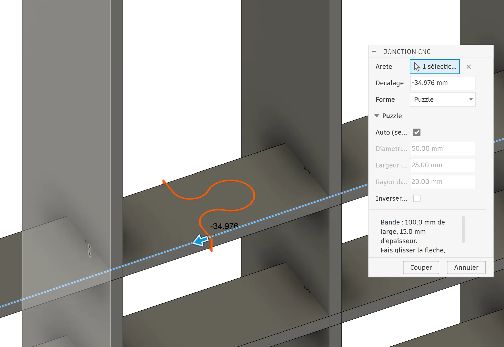
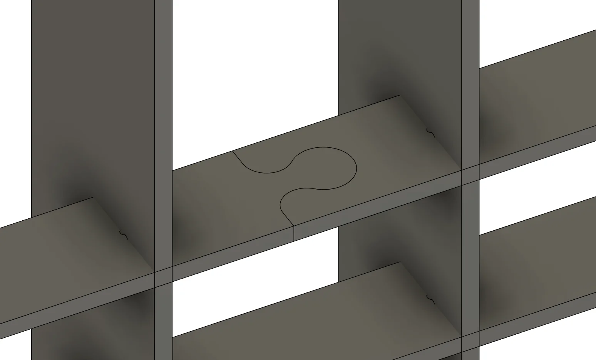

Découpe
Jonction CNC
Une pièce trop longue pour le panneau ? Jonction CNC la coupe en deux morceaux qui s'emboîtent comme un puzzle. Il suffit de cliquer une arête puis de faire glisser la flèche jusqu'à l'endroit de la coupe : la forme se dessine en direct sur la pièce.
- Forme puzzle dimensionnée automatiquement d'après la largeur et l'épaisseur de la pièce
- Diamètre de tête, largeur du col et rayon des congés réglables à la main
- Position au millimètre près, à la flèche ou en saisissant le décalage
- Sens de l'emboîtement inversable d'un clic

